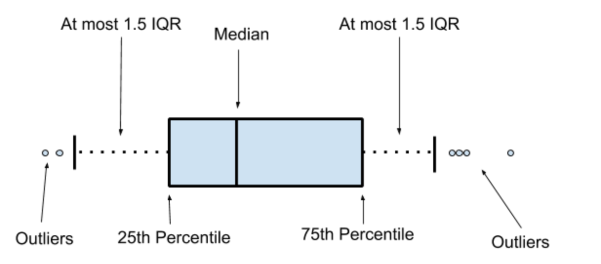
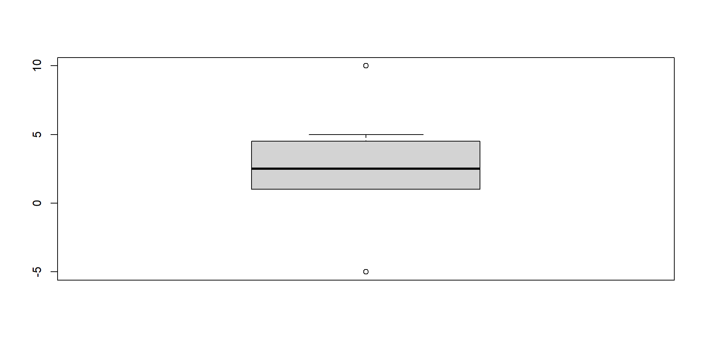

Data management, data cleaning and R style
Why cleaning data with R?
It can be written into an automated data inspection process, combining descriptive statistics and visualization to detect issues that need cleaning.
All cleaning steps are logged.
Save time cleaning new data.
Objective and sentence in R
a is objective, and 2 is value of objective.
If put a = 3, b = 2, and c = a x b so results of c?
- Objective is value, vector, matrix or data.frame
[1] "tbl_df" "tbl" "data.frame"Objective and sentence in R
Command or function are sentences in R for communicating with computer.
- Function before the (): what the function to do
- Agruments put into (): detail requirements
- To assign value to agruments, we need to use = instead of using <-
Objective and sentence in R
Example:
[1] 1000- Max: maximum value function of variable
- x: input agrument, choose id column in data df
- na.rm=TRUE: eliminate NA value in id column before maximizing value.
Tip
To read the instruction manual for a command, type ?command-name.
Process of cleaning data
The process of cleaning data usually includes the following steps:
Clean column names.
Check datatype.
Check values.
Format tables according to clean data rules.
Join tables (if necessary).
Handle error data.
Data type in R
| Classes | Explanation | Examples |
|---|---|---|
numeric |
for numerical data, including decimals | 2, 3.14, -1000, 2e6, etc |
logical |
for boolean data (TRUE/FALSE) without quotation marks |
TRUE/FALSE |
character |
for text/characters data (also referred to as string) | "Hello world", "R Together" |
Date |
data classified as Date | 2024-12-09, s, etc |
factor |
for categorical data | sex, economic status, etc |
data frame |
common way for R to store dataset, consists of vectors | |
tibble |
an “enhanced” version of data.frame which is less prone to error and printed more nicely in the console |
Special values
| Value | Description |
|---|---|
NA |
Stands for Not Available. Indicates missing values. |
NULL |
Indicates undefined/abscence of value. (e.g. numb <- NULL indicates value for variable numb is undefined) |
NaN |
Stands for Not a Number. Indicates unrepresentable number. |
Inf/-Inf |
Infinity/Negative infinity |
Data type convert
as.numeric()convert to numeric typeas.character()convert to character typeas.factor()convert to factor typeas.Date()convert to Date type (Be carefully)as.logical()convert to logicalifelse()may be used for create a new variableis.na()check NA values according to logical value.
Clean name of columns
Rules for column names typically include:
Short
No spaces (replace with underscore
_).No special characters (
&, #, <, >, …) or punctuation.Do not start with a number.
Using clean_names() in janitor package to to automate the column name
Clean name of columns
[1] "id" "gioitinh" "ngaysinh" "huyen" "xa" "tinh"
[7] "VGB <24" "VGB >24" "VGB_1" "VGB_2" "VGB_3" "VGB_4+"
[13] "HG_1" "HG_2" "HG_3" "HG_4+" "UV_1" "UV_2"
[19] "UV_3" "UV_4+" "tinhtrang" [1] "id" "gioitinh" "ngaysinh" "huyen" "xa" "tinh"
[7] "vgb_24" "vgb_24_2" "vgb_1" "vgb_2" "vgb_3" "vgb_4"
[13] "hg_1" "hg_2" "hg_3" "hg_4" "uv_1" "uv_2"
[19] "uv_3" "uv_4" "tinhtrang"Caution
If you don’t use <- then R will only return the results of the statements but the df table will not change.
Convert data type
tibble [1,000 × 21] (S3: tbl_df/tbl/data.frame)
$ id : num [1:1000] 1 2 3 4 5 6 7 8 9 10 ...
$ gioitinh : chr [1:1000] "nam" "nữ" "nữ" "nữ" ...
$ ngaysinh : chr [1:1000] "27/02/2024" "06/03/2024" "27/01/2024" "12/02/2024" ...
$ huyen : chr [1:1000] "Bình Chánh" "Huyện Thạnh Phú" "Thành phố Vĩnh Long" "Hóc Môn" ...
$ xa : chr [1:1000] "Phường Bình Hưng Hòa" "Phường 01" "Phường Phú Thuận" "Xã Đông Thạnh" ...
$ tinh : chr [1:1000] "Thành phố Hồ Chí Minh" "Thành phố Hồ Chí Minh" "Thành phố Hồ Chí Minh" "Thành phố Hồ Chí Minh" ...
$ vgb_truoc_24: chr [1:1000] "28/02/2024" "07/03/2024" "28/01/2024" "13/02/2024" ...
$ vgb_sau_24 : chr [1:1000] "29/02/2024" "08/03/2024" "29/01/2024" "14/02/2024" ...
$ vgb_1 : chr [1:1000] "10/03/2024" "23/03/2024" "08/02/2024" "17/02/2024" ...
$ vgb_2 : chr [1:1000] "20/03/2024" "27/03/2024" "18/02/2024" "27/02/2024" ...
$ vgb_3 : chr [1:1000] "20/03/2024" "11/04/2024" "19/02/2024" "28/02/2024" ...
$ vgb_4 : chr [1:1000] "04/04/2024" "26/04/2024" "19/02/2024" "28/02/2024" ...
$ hg_1 : chr [1:1000] "28/02/2024" "07/03/2024" "28/01/2024" "12/02/2024" ...
$ hg_2 : chr [1:1000] "02/03/2024" "22/03/2024" "07/02/2024" "16/02/2024" ...
$ hg_3 : chr [1:1000] "12/03/2024" "06/04/2024" "17/02/2024" "02/03/2024" ...
$ hg_4 : chr [1:1000] "12/03/2024" "16/04/2024" "27/02/2024" "12/03/2024" ...
$ uv_1 : chr [1:1000] "27/02/2024" "07/03/2024" "27/01/2024" "12/02/2024" ...
$ uv_2 : chr [1:1000] "28/02/2024" "22/03/2024" "06/02/2024" "22/02/2024" ...
$ uv_3 : chr [1:1000] "09/03/2024" "06/04/2024" "21/02/2024" "08/03/2024" ...
$ uv_4 : chr [1:1000] "19/03/2024" "21/04/2024" "02/03/2024" "23/03/2024" ...
$ tinhtrang : chr [1:1000] "theo dõi" "ngừng theo dõi" "ngừng theo dõi" "theo dõi" ...When importing data into R, columns will be automatically converted to the most appropriate datatype. - Date columns: R cannot automatically convert to Date because this format does not match. - Sex column should be converted to factor. - Status should be converted to logical.
Convert data type
tibble [1,000 × 21] (S3: tbl_df/tbl/data.frame)
$ id : num [1:1000] 1 2 3 4 5 6 7 8 9 10 ...
$ gioitinh : Factor w/ 2 levels "nam","nữ": 1 2 2 2 2 2 1 1 1 1 ...
$ ngaysinh : Date[1:1000], format: "2024-02-27" "2024-03-06" ...
$ huyen : chr [1:1000] "Bình Chánh" "Huyện Thạnh Phú" "Thành phố Vĩnh Long" "Hóc Môn" ...
$ xa : chr [1:1000] "Phường Bình Hưng Hòa" "Phường 01" "Phường Phú Thuận" "Xã Đông Thạnh" ...
$ tinh : chr [1:1000] "Thành phố Hồ Chí Minh" "Thành phố Hồ Chí Minh" "Thành phố Hồ Chí Minh" "Thành phố Hồ Chí Minh" ...
$ vgb_truoc_24: Date[1:1000], format: "2024-02-28" "2024-03-07" ...
$ vgb_sau_24 : Date[1:1000], format: "2024-02-29" "2024-03-08" ...
$ vgb_1 : Date[1:1000], format: "2024-03-10" "2024-03-23" ...
$ vgb_2 : Date[1:1000], format: "2024-03-20" "2024-03-27" ...
$ vgb_3 : Date[1:1000], format: "2024-03-20" "2024-04-11" ...
$ vgb_4 : Date[1:1000], format: "2024-04-04" "2024-04-26" ...
$ hg_1 : Date[1:1000], format: "2024-02-28" "2024-03-07" ...
$ hg_2 : Date[1:1000], format: "2024-03-02" "2024-03-22" ...
$ hg_3 : Date[1:1000], format: "2024-03-12" "2024-04-06" ...
$ hg_4 : Date[1:1000], format: "2024-03-12" "2024-04-16" ...
$ uv_1 : Date[1:1000], format: "2024-02-27" "2024-03-07" ...
$ uv_2 : Date[1:1000], format: "2024-02-28" "2024-03-22" ...
$ uv_3 : Date[1:1000], format: "2024-03-09" "2024-04-06" ...
$ uv_4 : Date[1:1000], format: "2024-03-19" "2024-04-21" ...
$ theodoi : logi [1:1000] TRUE FALSE FALSE TRUE TRUE TRUE ...Filter data
| Character | Description |
|---|---|
x == y |
x is equal to y |
x != y |
x is different from y |
x < y |
x is less than y |
x <= y |
x is less than or equal to y |
is.na(x) |
x is missing value |
A & B |
x and y |
A | B |
x or y |
! |
not |
Filter data
- Who have District 2
- Who have
vgb_1before February 20, 2024 - Who have District 2 or
vgb_1before February 20, 2024 - Who have District 2 and
vgb_1before February 20, 2024
String data type
| Function | Package | To use |
|---|---|---|
tolower |
base | Lowercase |
toupper |
base | Uppercase |
string_to_title |
stringr | Capitalize the first letter of each word |
stri_trans_general |
stringi | Remove mark |
Date data type
| Function | Package | To use |
|---|---|---|
differtime |
base | Calculate the distance between 2 time points |
month/year |
lubridate | Get motnh/ year |
quarter |
lubridate | Change date to quarter |
today |
lubridate | Get current date |
dmy, ymd, mdy |
lubridate | Convert string in various formats to date |
Date data type
- Find children vaccinated with
vgb_2within 2 month ofbirth
Check values
Usually includes the main operations: - Check for NA values. - Check for outliers and ranges of each column. - Check values between columns (if necessary).
Check NA values
[1] NATip
In R, NA is a special value that cannot be calculated or compared with other datatypes (the result always returns NA).
- Replace NA with another value.
- Remove rows containing NA.
Check outliers
To quickly check whether the data contains outliers, we can use boxplot to find value points that are far away from the remaining values.

Tip
In many cases, data that is considered an outlier may still be a valid value and should be kept for analysis.
If outliers are wrong, handle it as same as missing values.
Check outliers

Tidy data
- A dataset with rows and columns.
- Each column is a variable.
- Each row is an observation.
- Each cell contains 1 value only.
Tidy data
date cases_chn cases_kor cases_aus cases_jpn cases_mys
1 2020-01-20 0 0 0 0 0
2 2020-01-21 31 0 0 0 0
3 2020-01-23 262 0 0 0 0OR
# A tibble: 3 × 3
date country cases
<date> <chr> <dbl>
1 2020-01-20 cases_chn 0
2 2020-01-20 cases_kor 0
3 2020-01-20 cases_aus 0Joint table
| Function | Description | GIF |
|---|---|---|
left_join() |
Take the left table as the reference, and search for the corresponding rows of the right table to join. If rows without corresponding row to join, leave the value NA |
 |
inner_join() |
Take the left table as the reference, and search for corresponding rows of the right table to join. Rows without corresponding rows to join will be deleted |
 |
full_join() |
Kêp all rows of 2 tables after joining Rows of 2 tables that cannot be joined will be replaced with NA values |
 |
Handle error data
Edit data values
Filter duplicates
Filter rows by conditions
Edit data values
Missing values.
TRUE/FALSE data is displayed differently in the original data (eg: Marked X or left blank in the excel file).
Data uniformity.
replace_na(): replace NA values with the provided value is.na(): blank data (NA) has TRUE value and vice versa ifelse(): simple conditional coding, if yes else no case_when(): encode values for certain cases
Filter rows and columns
Remove missing values.
Filter by row number.
Filter by value.
Filter duplicate.
drop_na(): drop all within NA valuesleft_joint(),inner_joint(),full_joint(): joint tablesfilter(): filter rows and columns with conditionsdistinct(): filter duplicate observations.
Tidyverse

Why tidyverse
Every function in tidyverse shares a consistent structure and pattern.
Your R code may look cleaner and easier to follow, compared to base R.
You just need to install everything once, instead of different packages for different things.
Warning
- It is just a collection of R packages
- You don’t have to use tidyverse when using R
Commonly used tidyverse function
dplyr::select(): to select columns from df/tiblledplyr::mutate(): to change and create columns in a df/tibbledplyr::group_by()anddplyr::summarise(): to group data and summarise it using a function, e.g. mean, max, min, sumtidyr::pivot_longer(): to transform a df/tibble from wide to long format (less columns, more rows)tidyr::pivot_wider(): to transform a df/tibble from long to wide format (less rows, more columns)
Piping with %>%

- Is this a better way to write it? Can we improve it even further?
Piping with %>%

OR

Piping with %>%
- A powerful tool to express a sequence of actions.
- It helps you write code that is easier to read and understand.
- In R, you can pipe between functions using the
%>%or|>operators. - Rstudio shortcut: Cmd+Shift+M or Ctrl+Shift+M. :::: fragment ::: callout-tip R Together will use
%>%. ::: ::::
Functions
- A function is a reusable sequence of code.
- It can be created using the syntax.
Functions
Example: a simple function
[1] "Hello newbies"
[1] "We are SWAPER"